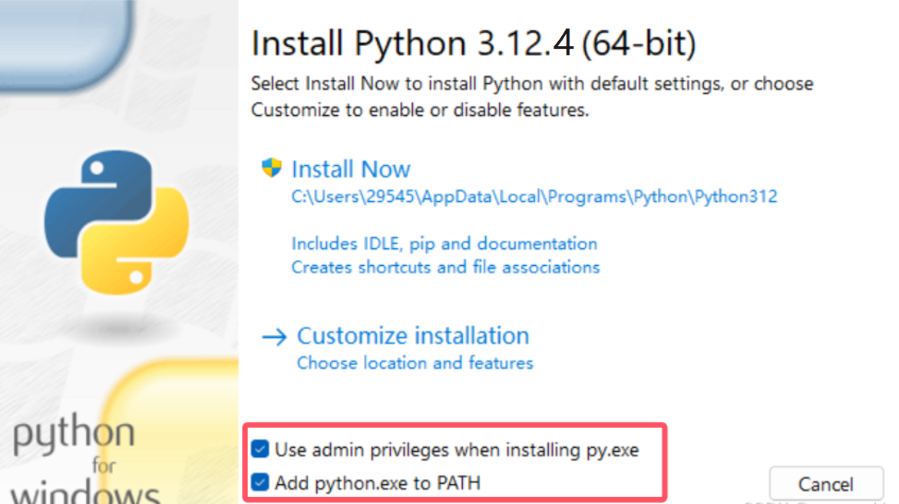
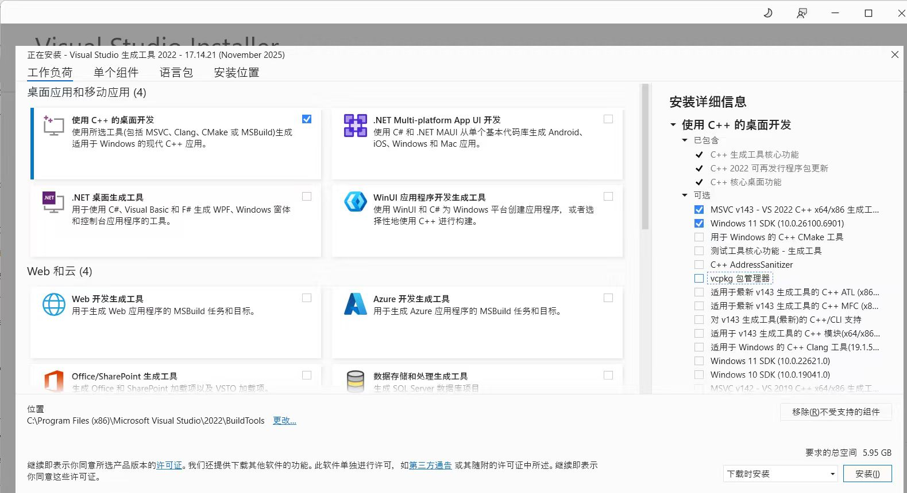

ROH-Gen1-Demos Suitable for ROH-A001/A002, Lites001

Demo Acquisition
-
Method 1: Click this link to download
-
Method 2: Visit ohand_serial_sdk GitHub page to download the latest version
-
Method 3: Obtain via clone:
git clone https://github.com/oymotion/roh_demos
Demo Operation Tutorial (Windows System)
ROHand's Demo is developed based on Python scripts. Below is the usage tutorial for Windows systems:
-
Currently supported ROHand models include ROH-A001, ROH-A002 and ROH-LiteS001 series.
-
The Demo currently offers three control methods: vision control, glove control, and gForce myoelectric armband control.
1. Install python3.12.4
Please ensure the host username is in English before installation
Click here get python3.12.4 from official website
or Click here to download the installer
Double-click the exe to open the Python installer, and be sure to check the option shown in the figure below before installation

Click Install Now
After installation is complete, you can open the command line to check if the installation was successful
python --version
If the installation is successful, the console will display Python 3.12.4
2. Install CH341SER Driver
Click hereto download CH341SER driver
Double-click the exe file to open the CH341SER installer
Click Install to proceed
3. Create virtual environment (optional)
Using a virtual environment ensures that installing demo dependencies does not affect other environments
pip install virtualenv
# Select any location where you want to configure the virtual environment
cd path/to/your/folder
# Create a virtual environment, "name" is the virtual environment name and can be customized
virtualenv name
# Activate virtual environment
.\name\Scripts\activate.bat
4. Install Required Dependencies
4.1 glove_ctrled_rohand
The glove-controlled dexterous hand demo requires bleak-winrt library, so additional installation of vs_BuildTools is necessary
Click hereto download vs_BuildTools
Double-click the exe file to open the Visual Studio Installer
Check the required installation packages as shown in the figure (mandatory)，others can be selected according to your needs

After checking the options, click Install to proceed
After installation, enter in the console：
cd /path/to/demo/glove_ctrled_rohand
pip install -r requirements.txt
After installation is complete, enter
python glove_ctrled_hand.py
Can start the demo
Important Notes:
- The glove requires calibration before use. After running the program, repeatedly perform hand opening-closing-opening movements until calibration is complete. During calibration, try to stay relaxed and avoid overextending fingers or clenching too tightly, as this may affect calibration results and control accuracy.
4.2 gesture_ctrled_rohand
cd /path/to/demo/gesture_ctrled_rohand
pip install -r requirements.txt
After installation is complete, enter
python gesture_ctrled_hand.py
Can start the demo
Note: The vision demo can only recognize gestures with the palm facing the camera and fingers pointing upward. Other postures may result in recognition inaccuracies.
4.3 gForce_ctrled_rohand
cd /path/to/demo/gForce_ctrled_rohand
pip install -r requirements.txt
After installation is complete, enter
python gForce_ctrled_hand.py
Can start the demo
Note: This demo requires pairing with the gForce armband APP. Gestures must be trained in the APP before use.
Demo Operation Tutorial (Ubuntu System)
Ubuntu usually comes with Python pre-installed, no need to download separately
1. Uninstall Brltty
Ubuntu does not require installation of 341 driver
However, brltty needs to be uninstalled as this dependency can cause abnormal serial port occupation
sudo apt remove brltty
2. Check If The Dexterous Hand Is Recognized And Add Permissions
After inserting the dexterous hand
ls /dev/ttyUSB*
Console print/dev/ttyUSB0
Grant permissions to the serial port
sudo chmod o+rw /dev/ttyUSB0
3. Create Virtual Environment (Optional)
Using a virtual environment ensures that installing demo dependencies does not affect other environments
pip3 install virtualenv
# Select any location where you want to configure the virtual environment, 'name' is the name of the virtual environment and can be freely modified.
cd path/to/your/folder
# Create a virtual environment, 'name' is the virtual environment name and can be customized
virtualenv name
# Activate virtual environment
source name/bin/activate
4. Install Required Dependencies
4.1 glove_ctrled_rohand
cd path/to/demo/glove_ctrled_rohand
pip3 install -r requirements.txt
After installation, you need to go to line 101 in glove_ctrled_hand.py
# connect to Modbus device
client = ModbusSerialClient(self.find_comport("CH340") or self.find_comport("USB"), FramerType.RTU, 115200)
if not client.connect():
print("Failed to connect to Modbus device")
exit(-1)
Replace self.find_comport("CH340") to "/dev/ttyUSB0"
# connect to Modbus device
client = ModbusSerialClient("/dev/ttyUSB0" or self.find_comport("USB"), FramerType.RTU, 115200)
if not client.connect():
print("Failed to connect to Modbus device")
exit(-1)
Important Note: Please check whether your glove is the Bluetooth version or the wired version
- If you are using the wired version, after inserting the glove and starting up, please check
ls /dev/ttyACM*
Has it been printed /dev/ttyACM0
If present, please add permissions for this serial port
sudo chmod o+rw /dev/ttyACM0
After completion, enter：
python3 glove_ctrled_hand.py
Can start the demo
Note: The glove requires calibration before use. After running the program, repeatedly perform the hand opening-closing-opening movements until calibration is complete. During calibration, remain relaxed and avoid overextending fingers or clenching too tightly, as this may affect calibration results and control accuracy.
4.2 gesture_ctrled_rohand
cd /path/to/demo/gesture_ctrled_rohand
pip install -r requirements.txt
After installation, the serial port also needs to be modified.
client = ModbusSerialClient(find_comport("CH340") or find_comport("USB"), FramerType.RTU, 115200)
At line 158, change find_comport("CH340") to "/dev/ttyUSB0"
client = ModbusSerialClient("/dev/ttyUSB0" or find_comport("USB"), FramerType.RTU, 115200)
Then enter：
python gesture_ctrled_hand.py
Can start the demo
Note: The vision demo can only recognize gestures with the palm facing the camera and fingers pointing upward. Other postures may lead to recognition inaccuracies.
4.3 gForce_ctrled_rohand
cd /path/to/demo/gForce_ctrled_rohand
pip install -r requirements.txt
Similarly modify the serial port
client = ModbusSerialClient(find_comport("CH340") or find_comport("USB"), FramerType.RTU, 115200)
At line 126, change find_comport("CH340") to "/dev/ttyUSB0"
client = ModbusSerialClient("/dev/ttyUSB0" or find_comport("USB"), FramerType.RTU, 115200)
After completion, enter
python gForce_ctrled_hand.py
Can start the demo
Note: This demo requires pairing with the gForce armband APP. Gestures must be trained in the APP before use.
Demo run example
1. gesture_ctrled_rohand

2. glove_ctrled_rohand

3. gForce_ctrled_rohand